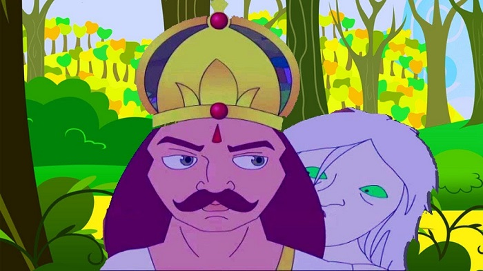

Characteristics of the Blood
Blood has its own characteristics
Vikram was walking fast. He had to reach the Yogee in time. Vaitaal said -
"Vikram, Now listen to the story. The king of Adhak Desh was very brave and
mighty. His kingdom was very large. One day a Vaishya came in his court. He
greeted him prostrating in front of him and said - "Victory to the king." That
Vaishya had three sons, but unfortunately all were blind. They also greeted
the king and stood aside.
The Vaishya said - "Raajan, I am in great difficulty. I need 1,000 gold coins.
I will return them after 6 months." King asked - "What is such a need?" The
Vaishya said - "I want to go to foreign lands for business." The king didn't
speak anything. At this the Vaishya said - "I am leaving my three sons in
return of the money." The king asked - "But they are blind, what will I do of
them?"
Vaishya said - "Please do not say like this about them. my all the sons are
very qualitative." "How", the king asked. Vaishya said - "Raajan, They work
on the basis of touch and smell. My first son is very good at horse, the
second one knows women very well, and the third one knows weapons very well.
If you find anything wrong with their judgment, you may cut their head, and
punish me also when I have come back. My three sons will help you in carrying
out your royal duties." The king agreed, he gave him 1,000 gold coins and the
Vaishya went away. The king made the arrangements of his sons' living and
food etc.
Thus some time passed. One day a horse trader came in the court and showed
a beautiful horse to the king. The king liked the horse, so he got ready to
buy that horse. The trader said - "It is very beautiful horse. It is from
Kaabul." He told the king very high price for that horse. The king was about
to buy the horse, that he remembered the Vaishya's first son. He ordered to
bring him in the court.
The Vaishya's son was bought to the court. He asked him to examine the
horse and advise him whether to buy or not to buy that horse. Vaishya's son
went to the horse and started examining him by touching him at many places.
The trader and the courtiers were smiling thinking that what this blind boy
can tell about the horse without seeing him. As he started smelling him, the
trader said - "Leave him alone. Is a horse examined by smelling?" Still the
boy continued his examination by smelling the horse.
After a while he said - "Raajan, Please, never buy this horse even by
mistake." "Why?" "You may ask somebody to sit upon him and try him." The
king asked one of his soldiers to try him. He sat on the horse, and drove him,
but after a while the horse had thrown him down and started shaking his head
badly. The trader got surprised to see this. He said to the king - "Raajan,
This horse has never behaved with me like this before."
The boy said - "He will never behave like this with any milkman. You are a
milkman. You have abandoned your own job, and now you are in the business of
horse trading." The trader asked him - "How do you know that I am a
milkman?" "This horse is born in your house only. His parents are also with
you. You have fed him buffalo's milk. I knew it by his smell." The trader was
very surprised to know all these details. He bowed to the king and went from
there asking his forgiveness. The king got very happy with the Vaishya's son,
he ordered his people to make his food double.
One day a jeweler came in the court of the king. He showed him many
beautiful gems. The king liked some gems, so he got ready to buy some of
them. But then again he remembered the Vaishya's second son, he ordered his
people to bring him in the court. He was brought in the court.
The king said - "O Boy, I want to buy these gems, advise me on this matter."
The boy examined them and separated some beautiful gems and advised the
king not to buy them." "Why?" "Because all of them are inauspicious. At least
do not buy this ruby. This is very inauspicious. It goes in whichever house,
kills somebody in that house."
That jeweler knew this, he got very scared hearing this. The king asked him -
"Tell me O jeweler, Is it true?" The jeweler said folding his hands -
"Maaraaj, Please forgive me." The king forgave him and the jeweler went
away. The king asked his people to make his food also double. After a while a
trader in weapons came to the king's court and this time also the Vaishya's
third son proved himself.
After a while the Vaishya came back from his business and he asked his sons
back. The king asked him - "You are the father of these boys, what is your
specialty?" The Vaishya said - "I know the person." The king asked - "Then
tell me, what do you know about me?" The Vaishya said - "You are the son of
a cook. You have never given any reward to my sons, but to increase their
diet." The king became severely angry hearing this. He immediately ordered to
kill the Vaishya and his sons.
Vaitaal said - "Tell me, Vikram, Was the king sinner or not?"
Vikram said - "The king was not a sinner. This is true that the characteristics
of blood never go away, but the Vaishya should have acted intelligently. He
was killed along with his sons only because of his foolishness."
Vaitaal laughed loudly, ran away and hung from the same tree. Vikram was
again following him.